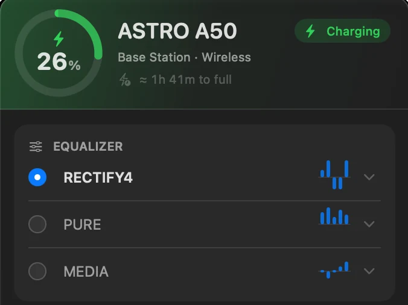
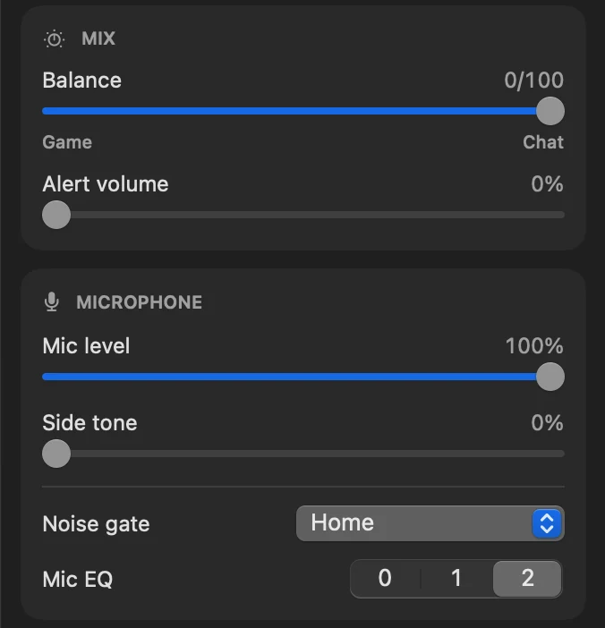
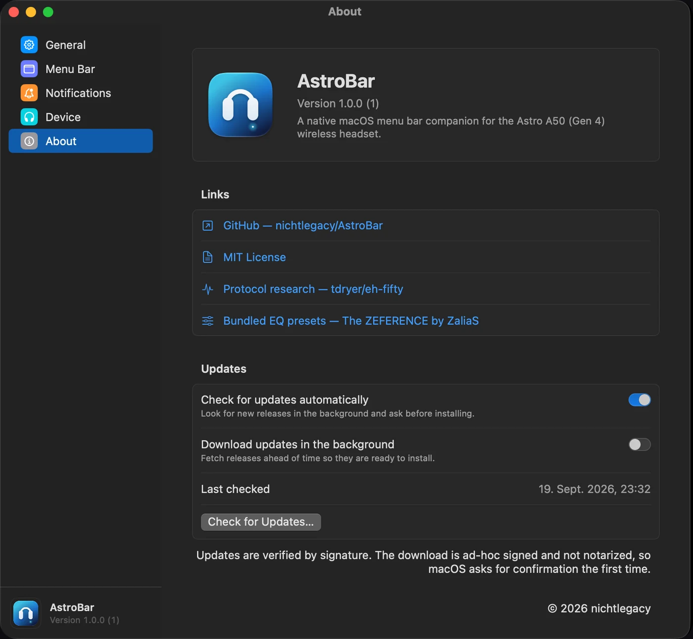

What the base station knows
Dock, radio link and charging arrive as three separate bits. The panel resolves them into one answer.

Control panel for the ASTRO A50
Battery, the full parametric equalizer, mix and microphone, read straight from the base station. Astro Command Center never made it to Apple silicon. This did.
Free & open source · macOS 14+ · Apple silicon · v__VERSION__
The five that shipped with Command Center, recovered by manuacl from a USB capture, and ten community tunings from The ZEFERENCE by ZaliaS. Load any of them into a slot, or bring your own.
Dock, radio link and charging arrive as three separate bits. The panel resolves them into one answer.

Game/chat balance, alert volume, mic level, side tone, noise gate and mic EQ. All of it applies live.

Learned from the observed rate, per profile, kept across restarts. Until a profile is measured, no number at all.
Gain, centre frequency and bandwidth for all five bands, in each of the three slots the A50 keeps. Renamed inline, applied live.
No driver, no kext, no helper, no G HUB. AstroBar speaks the base station’s 64-byte HID reports directly, and so does its command line twin.
Protocol research: eh-fifty$ swift run astrobar-cli dump AstroBar diagnostics ──────────────────────────────────────── ✓ Connected to base station Battery & power Battery 26% (charging) Headset linked, docked Equalizer Active preset 1 Preset 1 name RECTIFY4 Preset 1 gain (dB) 3, 7, -5, -5, 7 … presets 2 and 3 … mix sliders, audio Microphone Mic EQ preset 2 Noise gate Home

Launch at login. Battery percentage and a headphone or battery icon in the menu bar. A low-battery alert and the level it fires at, 5 to 50 %. Automatic update checks and background downloads.
Get AstroBar-__VERSION__.dmg from GitHub Releases, drag the app into Applications and clear the quarantine flag once:
Without the terminal: launch it, dismiss the warning, then System Settings → Privacy & Security → Open Anyway.
The project has no Apple Developer account, so the app is ad-hoc signed and not notarized. macOS calls it damaged on first launch. It isn’t, and only the first launch is affected.
The A50 Gen 4 with its base station on USB (0x9886:0x002c). A headset on the bare USB cable charges but exposes no controls, and the A50 X / Gen 5 speaks a different protocol entirely.
Through Sparkle, in the background and switchable off. Every download is checked against an EdDSA signature, and nothing installs without asking.
macOS 14 or later on Apple silicon, about 3 MB, no background service. On an Intel Mac it builds from source: git clone, then make install.
An independent open-source hobby project, not affiliated with, endorsed or sponsored by Logitech or ASTRO Gaming. Product and brand names belong to their owners.